de parts de marché sur la recherche d'information en ligne.
Formation · Sensibilisation
Dé-google-iser
Reprendre le contrôle de son numérique : comprendre pourquoi se détacher de Google, et comment le faire concrètement, service par service.
ConfidentialitéSouveraineté
LibreAuto-hébergement
→ pour commencer
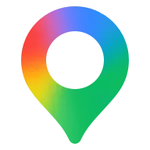
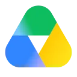
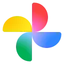
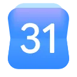
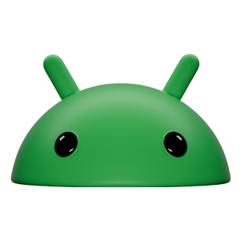
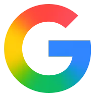
Ouverture · Mise en situation
Votre journée déjà sous Google
06 h 40
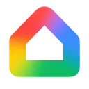
RéveilL'enceinte allume la lumière et lit l'agenda.07 h 05Premier regardLe téléphone connaît déjà votre position.
07 h 40Premier messageLa saisie prédictive apprend de vos frappes.
08 h 30
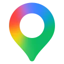
TrajetItinéraire et historique de localisation consignés.09 h 15Boîte mailContenu analysé pour filtrer, classer et profiler.
11 h 00
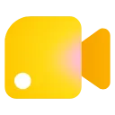
RéunionLa visio peut être transcrite automatiquement.13 h 10Pause vidéoUn algorithme décide de ce que vous verrez ensuite.
22 h 20Recherche du soirUne question intime, enregistrée puis monétisée.
À 22 h 20, vous n'avez rien installé de particulier.Vous êtes installé.
Ouverture · L'échelle du phénomène
Google en chiffres
de recherches traitées chaque jour dans le monde.
d'utilisateurs consultent Gmail chaque mois.
d'appareils Android actifs dans le monde.
d'utilisateurs mensuels sur YouTube.
de capitalisation pour Alphabet, la maison mère.
Ce que ces chiffres racontent
Une telle échelle ne vient pas de la qualité seule : elle vient de la position de passage obligé que Google occupe entre vous et l'information.
Ouverture · Notre promesse
Ce que vous allez apprendre
1
Comprendre pourquoi
Le modèle économique derrière la gratuité, et ce qu'il vous coûte vraiment.
2
Choisir des alternatives
Pour chaque service, une option libre ou fiable — avec ses forces et ses limites.
3
Migrer sans rien casser
Un calendrier progressif : sauvegarder, installer, basculer, nettoyer.
4
Tenir dans la durée
Faire de la souveraineté numérique une habitude, pas un coup d'éclat.
Notre parti pris
Pas de prosélytisme : on informe, on ne juge pas. Chaque choix dépend de votre contexte, de votre temps et de votre tolérance à la technique.
Sommaire
Le parcours en six étapes
01
Introduction
Qu'est-ce que Google ? Un écosystème vertical, brique par brique.
02
Pourquoi quitter Google ?
Modèle publicitaire, lock-in, CLOUD Act, résilience, monopole.
03
Les alternatives
20 catégories, avantages et limites, service par service.
04
Autres services non-Google
Netflix, iOS, Microsoft — la logique s'élargit.
05
Calendrier de migration
8 semaines + l'entretien : sauvegarder, installer, basculer, nettoyer.
06
Conclusion & ressources
Les idées clés, la prochaine étape, où continuer.
01 · Introduction
Qu'est-ce que Google ?
Google n'est plus un moteur de recherche : c'est un écosystème vertical qui touche le matériel, le système d'exploitation, l'identité, la communication, les médias et l'intelligence artificielle. Chaque brique génère des données qui nourrissent les autres.
MatérielSystème d'exploitation
IdentitéCommunication
MédiasIntelligence artificielle
Le point clé
Plus on empile de services Google, plus le coût de sortie est élevé (verrouillage / lock-in) et plus le profil constitué est précis.
01 · Introduction
L'écosystême Google (1/2)
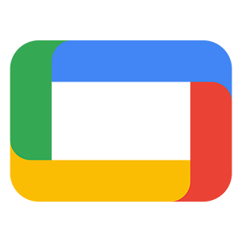
Matériel
Nest · Google TV Streamer · Pixel · Pixel Buds · Pixel Tablet · Pixel Watch
Plateformes
Android · Android Auto · Android TV · Voitures avec Google intégré · Chromebook / ChromeOS · Google TV · Wear OS
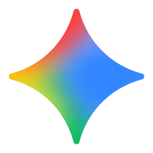
Intelligence
Gemini · NotebookLM · Google Assistant · Lens
Productivité
Calendar · Docs · Drive · Forms · Keep · Sheets · Sites · Slides · Tasks · Workspace
Communication
Contacts · Gmail · Chat · Fi Wireless · Meet · Messages · Voice
Navigation
Earth · Maps · Street View · Waze
01 · Introduction
L'écosystême Google (2/2)
Divertissement
Cast · Photos · Play Store · Play Books · Play Games · Play Pass · YouTube · YouTube Kids · YouTube Music · YouTube TV
Information
Chrome · Flights · News · Trends · Search · Shopping · Travel
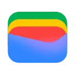
Finance
Finance · Pay · Wallet
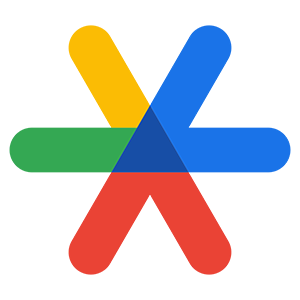
Sécurité
Find Hub · Authenticator · Family Link · Play Protect
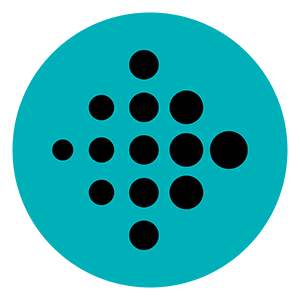
Santé
Fitbit · Fit
Éducation
Arts & Culture · Classroom · Scholar
Utilitaires
Digital Wellbeing · Files · Gboard · Fonts · Home · One · Translate
Cloud · Ads · Firebase · Flutter · TensorFlow · Blogger…
La face « entreprise » du même écosystème.
02 · Pourquoi partir
Pourquoi quitter Google ?
Confidentialité — le modèle économique
« Si c'est gratuit, c'est toi le produit. » L'essentiel des revenus vient de la publicité ciblée : collecte et recoupement de données — recherche, localisation, vidéos, e-mails scannés, achats, agenda, voice.
Vie privée par design
Le profil ne se limite pas à ce que vous partagez : historiques de localisation persistants, profils « fantômes » de non-utilisateurs, recoupements entre Gmail, Maps, YouTube et Chrome.
Verrouillage (lock-in)
Formats propriétaires, stockage captif, dépendance aux GApps, intégration profonde Android : partir devient de plus en plus cher en temps et en données.
Souveraineté & juridiction
Les données dorment sur des serveurs soumis au droit américain (CLOUD Act) : une autorité US peut y accéder, quel que soit votre pays.
Résilience
Un compte suspendu (à tort ou à raison) = e-mails, photos, achats, sauvegardes potentiellement inaccessibles du jour au lendemain. Vous êtes locataire, pas propriétaire.
Effet de monopole
Moteur de recherche + navigateur + OS + publicité = biais structurels sur ce qu'on trouve, ce qu'on voit et ce qu'on recommande.
À retenir
Quitter Google, ce n'est pas forcément tout supprimer d'un coup : c'est reprendre la main, brique par brique, avec des alternatives matures.
02 · Pourquoi partir — le mythe
Navigation privée : ce que le mode invisible ne fait pas
L'événement : le mode incognito de Chrome ne cache que l'historique local. IP, empreinte du navigateur, cookies tiers et surtout compte Google connecté restent visibles : le laser du scan révèle le profil derrière le masque.
Ce que ça veut direIncognito ≠ anonymat. Contre le traçage : Firefox + uBlock Origin, conteneurs étanches, compte déconnecté.
Le réflexeAuditer qui vous suit vraiment : déconnexion du compte, conteneurs Firefox, bloqueur strict. L'incognito ne protège que de vos proches, pas du réseau.
#01
Le rayon X incognito
Vie privée02 · Pourquoi partir — le coût matériel
Pourquoi Google Chrome consomme autant de mémoire ?
L'événement : Chrome empile un processus par onglet et garde tout en mémoire : la barrette de 32 Go se vide comme sous les coups d'un Pac-Man aux couleurs de Google.
Ce que ça veut direAutant d'onglets, autant de RAM dévorée — autonomie et ventilateur en prennent un coup.
Alternative sobreFirefox / LibreWolf, moteur Gecko indépendant, consommation mieux maîtrisée et bloqueur qui allège les pages.
#02
Le Pac-Man à RAM de Chrome
Matériel02 · Pourquoi partir — l'événement
Manifest V3 : ce que change la nouvelle extension API
L'événement : en 2023-2024, Google impose Manifest V3 dans Chrome : les bloqueurs comme uBlock Origin sont amputés « au nom de la sécurité ». Le bouclier dévie encore le laser, mais la tourelle MV3 tire en continu.
Ce que ça veut direQui contrôle le navigateur contrôle la pub. Réponse : Firefox + uBlock Origin complet, hors monopole Chromium.
Le réflexeGarder un navigateur où le blocage reste entier — Firefox, listes à jour, pas de Chromium bridé.
#03
La guerre du bouclier Manifest V3
Extensions02 · Pourquoi partir — l'événement
La publicité ciblée : comment vos données sont utilisées
L'événement : l'ad tech recoupe contexte, audio et géolocalisation : une phrase prononcée — « des chaussettes… » — et la carte pub tombe en 3 secondes.
Ce que ça veut direLe ciblage n'est pas de la télépathie, c'est du recoupement : requêtes, localisation, historique d'écoute.
Le réflexeCouper micro et géolocalisation par application, auditer les autorisations (voir « Triangulé même GPS éteint »).
#04
Le lanceur de pub télépathique
Ad Tech02 · Pourquoi partir — l'événement
ReCAPTCHA : votre validation au service des IA
L'événement : chaque grille « sélectionnez les feux tricolores » vous fait labelliser gratis les données d'entraînement (vision par ordinateur, véhicules autonomes) — et la grille se régénère sans fin.
Ce que ça veut direLe « test anti-robot » est une chaîne de micro-travail non payé. Préférer des services sans captcha Google.
Le réflexePrivilégier les alternatives qui n'exploitent pas vos clics, et les protections anti-pistage qui limitent ces tests.
#05
La fonte multi-images du ReCAPTCHA
Anti-robot02 · Pourquoi partir — le symbole
« Don't Be Evil », retirée en 2018
L'événement : en 2000, Google promettait « Don't Be Evil » ; la devise est discrètement retirée du code de conduite en 2018, remplacée par l'optimisation des revenus publicitaires.
Ce que ça veut direDe l'éthique fondatrice aux résultats trimestriels : c'est le basculement que raconte toute la présentation.
Le symboleQuand la devise change, le produit change aussi : vous êtes passé d'utilisateur à matière première publicitaire.
#06
« Don't Be Evil », barré
Devise02 · Pourquoi partir — l'événement
Google payée pour rester le moteur de recherche par défaut
L'événement : au début des années 2020, Google a versé jusqu'à ~20 Md$ par an à Apple pour rester le moteur par défaut de Safari — révélé au procès antitrust du DOJ américain (monopole jugé illégal, août 2024).
Ce que ça veut direLe « choix par défaut » s'achète. Changer de moteur et de navigateur casse la rente.
Le réflexeReprendre la main sur ses défauts : moteur, navigateur, recherche — trois réglages, un gros effet.
#07
Le chèque par défaut à 20 Md$
Search · Apple02 · Pourquoi partir — l'événement
Les permissions appli : tout ou rien
L'événement : même logique côté mobile : des applis très simples exigent parfois GPS, micro et capteurs corporels ; refuser, c'est être éjecté. Pour calculer 2 + 2.
Ce que ça veut direLe modèle tout-ou-rien : l'accès se paie en données, même absurdes.
Le réflexeAuditer les permissions Android, passer par F-Droid / Aurora, refuser le tout-ou-rien.
#08
Le chantage de la calculatrice
Permissions02 · Pourquoi partir — l'événement
Votre position même avec le GPS éteint
L'événement : GPS coupé, le téléphone remonte quand même sa position : triangulation Wi-Fi, Bluetooth et antennes relais — le paquet traverse l'écran « sécurisé » jusqu'au journal LAT/LONG.
Ce que ça veut direCouper le GPS ne suffit pas : couper Wi-Fi et Bluetooth hors usage, revoir l'historique de localisation Maps.
Le réflexeDésactiver l'historique de localisation, limiter le scan Wi-Fi en arrière-plan, préférer Organic Maps hors-ligne.
#11
Le renifleur Wi-Fi ambiant
Localisation02 · Pourquoi partir — le modèle
Données personnelles & publicité : la chaîne de valeur
L'événement : la presse hydraulique fait le reste : l'utilisateur est pressé en « pétrole publicitaire », revendu aux enchères en temps réel.
Ce que ça veut direRecherche + localisation + vidéos + mails recoupés = le profil qui vaut de l'or.
Le modèleD'où la migration brique par brique : chaque service repris assèche un tuyau de la raffinerie.
#12
La raffinerie comportementale
Snowden02 · Pourquoi partir — l'événement
PRISM et le CLOUD Act : ce que Snowden a relevé
L'événement : en 2013, Snowden révèle PRISM : accès des agences américaines aux serveurs des géants du cloud. Depuis, le CLOUD Act (2018) permet aux autorités américaines de réquisitionner vos données quel que soit votre pays.
Ce que ça veut direCentralisé = perquisitionnable. Chiffrer et héberger en UE ou chez soi (Nextcloud).
Le réflexeChiffrement côté client, juridiction UE, sauvegardes hors cloud US.
#13
Le chalutier PRISM
FISA02 · Pourquoi partir — le verrouillage
Le compte unique : tout lié, tout à risque
L'événement : comme tout est branché sur « Se connecter avec Google », une suspension — même par erreur — fait tomber banque, santé et photos en cascade.
Ce que ça veut direUn compte unique = un point unique de défaillance. Vous êtes locataire, pas propriétaire.
Le réflexeSortir du SSO unique : gestionnaire de mots de passe + 2FA (voir « Couper le cordon »).
#14
La cascade SSO
Verrouillage02 · Pourquoi partir — l'événement
Recall : Windows enregistre tout, tout le temps
L'événement : en mai 2024, Microsoft annonce Recall / Copilot : une capture d'écran toutes les 3 secondes, stockée en local — tollé immédiat des chercheurs, report en urgence.
Ce que ça veut direMême logique que Google : tout voir, tout retenir — côté Windows cette fois.
Le réflexeDésactiver Recall et Copilot, durcir Windows — ou passer à Linux + Firefox.
#17
Le détective Recall
Windows02 · Pourquoi partir — l'événement
Le monopole du moteur de navigateur (Chromium)
L'événement : côté navigateurs, ~70 % du web repose sur Chromium/Blink (Chrome, Edge, Brave, Opera…) : l'usine estampille ses clones pendant que Firefox façonne seul son moteur Gecko.
Ce que ça veut direLe monopole du moteur = Google écrit les règles du web (cf. Manifest V3). Soutenir Firefox / Gecko, c'est voter.
Le réflexeChoisir Gecko (Firefox / LibreWolf), garder Chromium cantonné à un profil secondaire si besoin.
#18
L'usine à clones Chromium
Navigateurs03 · Les alternatives
03
Les alternatives
Logique : « aussi bon que possible, libre par défaut, auto-hébergeable quand c'est utile ». Pour chaque service : ce que c'est, avantages vs Google, limites.
Clé de lecture des 20 catégories
Xx
Nom libreUne alternative open source ou de confiance — affichée avec son vrai logo (monogramme coloré en repli si l'image manque).
Ce que c'estUne phrase pour situer l'outil dans le quotidien.
AvantagesCe qui est mieux — ou simplement plus libre — que chez Google.
LimitesCe qui reste imparfait : on ne vend pas du rêve, on informe.
03 · Les alternatives — carte
Les 20 chantiers en une carte
20 catégories d'un coup, c'est indigeste. Voici la carte : on survole ensemble, puis chacun creuse son chantier prioritaire. Le détail service par service suit — et reste disponible en référence.
A
Chercher & se repérer
Recherche · Cartographie · Traduction · Navigateur
B
Communiquer
E-mail · Messagerie · Visioconférence · Agenda
C
Travailler
Traitement · Tableur · Présentation · Formulaires · Notes · Stockage · Photos
D
Mobile & système
Système mobile · Applications · Identité / 2FA · Vidéo · IA générative
Consigne pour la suite
Repérez UN chantier à attaquer cette semaine. On ne lit pas les 20 slides : on y pioche selon vos usages.
03 · Les alternatives — en action
La ferme souveraine
L'événement, version solution : la cabane Nextcloud (auto-hébergée ou chez un hébergeur UE) déploie son dôme vert : fichiers, agenda, contacts, photos — selon vos règles. La pluie de télémétrie publicitaire rebondit dessus.
#20
La ferme Nextcloud
Auto-hébergement03 · Les alternatives — en action
La route honnête
L'événement : Maps affiche des lieux sponsorisés le long du trajet (« PUB DRIVE-THRU ») ; Organic Maps va à l'essentiel, hors-ligne, sans pub.
CartographieOpenStreetMap · CoMaps · OsmAnd : données ouvertes, navigation hors-ligne, vie privée.
Le réflexeTélécharger ses cartes hors-ligne, couper l'historique de localisation, comparer l'itinéraire sans les encarts sponsorisés.
#21
Cartes organiques vs détour
Navigation03 · Les alternatives — en action
Couper le cordon SSO
L'événement : pour ne plus dépendre du bouton « Se connecter avec Google », la lame Bitwarden tranche les câbles SSO : une clé unique de 32 caractères par site.
IdentitéBitwarden / KeePassXC + Aegis : fini la cascade SSO vue avec PRISM.
Le réflexeUn mot de passe unique par site, 2FA hors SMS, export chiffré de secours.
#22
Couper le cordon ombilical SSO
Mots de passe03 · Les alternatives — en action
GrapheneOS : désactiver les Google Play Services
L'événement : le scanner vert de GrapheneOS balaie le téléphone et neutralise les Play Services : l'exorcisme retire la surveillance au niveau système.
SystèmeGrapheneOS (Pixel) ou LineageOS (multi-appareils) : semaine 7 du calendrier.
Le réflexeSauvegarder avant de flasher, tester ses applis critiques, garder un appareil de secours pendant la bascule.
#23
L'exorcisme GrapheneOS
ROM03 · Les alternatives — en action
Aurora Store : installer des applis sans compte Google
L'événement : pour garder vos applis sans compte Google, Aurora Store télécharge les applis du Play Store de façon anonyme, sans se déclarer.
ApplisF-Droid (100 % libre) + Aurora (Play anonyme) + Obtainium (APK directes).
Le réflexePriorité au libre (F-Droid), Aurora en anonyme pour le reste, mises à jour via Obtainium quand la source est connue.
#24
L'espion Aurora Store
Anonymat03 · Les alternatives — en action
FreeTube : YouTube sans publicité
L'événement : la pub YouTube de 45 s est éjectée dans le vide : FreeTube, NewPipe et Piped lisent sans compte, zéro pub, zéro pistage — via proxy ou extraction directe selon l'outil.
VidéoNewPipe · Invidious/Piped · PeerTube, plus Tournesol pour des recos éthiques.
Le réflexeLire via client libre, s'abonner via RSS, soutenir les créateurs hors pub.
#27
L'éjecteur de pub
FreeTube03 · Les alternatives — en action
Google Docs : un fichier, un profil
L'événement : quand le travail impose Docs, la boîte à gants l'enferme derrière une vitre scellée : profil dédié, conteneur étanche, cookies confinés au pro.
BureautiqueIsoler le pro en attendant LibreOffice · ONLYOFFICE · CryptPad.
Le réflexeProfil navigateur dédié au pro, conteneur étanche, déconnexion du compte perso — en attendant la migration complète.
#28
La boîte à gants Docs
Sandbox04 · Au-delà de Google
Aussi : Netflix, iOS, Microsoft
NETFLIX
↓
Jellyfin
Médiathèque personnelle auto-hébergée : lisez vos propres fichiers, sans tracking, multi-appareils.
Limite Il faut constituer et héberger votre propre bibliothèque.
APPLE · IOS
↓
Android dégooglisé
GrapheneOS / LineageOS selon l'appareil ; sinon, durcir iOS : Safari + bloqueur, e-mail chiffré.
Note Écosystème fermé : à défaut de partir, on limite la casse.
MICROSOFT
↓
Alternatives libres
- GitHub → GitLab · Gitea/Forgejo · Codeberg (association, éthique, non marchand)
- Office → LibreOffice · ONLYOFFICE
- Teams → Jitsi Meet · Element
05 · Plan de migration — semaine 1
Les 15 Go gratuits : un appât vers le lock-in
L'événement : les 15 Go gratuits partagés entre Gmail, Drive et Photos sont un appât : à 14,99 Go, Gmail refuse vos messages — sauf à passer à Google One.
Semaine 1 — auditInventorier ce qui pèse : Photos, Drive, Gmail. Nettoyer avant d'exporter, sinon on déménage du bruit.
Le piègeLe quota commun transforme un service gratuit en abonnement : anticiper avant le blocage.
#09
L'otage des 15 Go
Google One05 · Plan de migration — semaine 1
Exporter ses données avec Google Takeout
L'événement : la sortie existe, Google Takeout, mais elle est conditionnelle : archives fragmentées, dossiers multiples, JSON éparpillés, liens valables 7 jours.
Semaine 1 — sauvegardeLancer Takeout aujourd'hui : photos, drive, mail, contacts, agenda. Vérifier, garder une copie hors-ligne.
La suiteSemaine 5 : importer dans Nextcloud + Immich. Ne supprimer le compte qu'en semaine 8.
#10
La libération de l'otage Takeout
Export05 · Plan de migration
Proposition de calendrier de migration
Principe : sauvegarder → installer → basculer → nettoyer. On ne casse rien, on migre en parallèle, on ne supprime le compte Google qu'à la fin.
SEMAINE 1
Audit & sauvegarde
Google Takeout (photos, drive, mail, contacts, agenda) · liste des services / utilisateurs — tout récupérer, tout inventorier.
SEMAINE 2
Fondations
Domaine + VPS / NAS · installer Nextcloud · choisir l'e-mail cible — préparer l'infrastructure.
SEMAINE 3
Navigateur & e-mail
Firefox / LibreWolf + uBlock Origin · créer Tuta / Disroot · prévenir ses contacts — couper le tracking, ouvrir une boîte.
SEMAINE 4
Bascule e-mail
Rediriger l'ancien mail · changer l'adresse sur chaque compte / abonnement — transférer les flux.
SEMAINE 5
Fichiers & photos
Syncthing + Nextcloud · importer les archives dans Immich — déplacer la donnée.
SEMAINE 6
Suite & agenda
CalDAV / CardDAV · LibreOffice / Nextcloud · Joplin — remplacer l'usage quotidien.
SEMAINE 7
Mobile
LineageOS / GrapheneOS · F-Droid / Aurora / microG · apps alternatives — dégoogliser le téléphone.
SEMAINE 8
Nettoyage
Révoquer tous les accès · supprimer le compte — couper le cordon.
ENTRETIEN
Tenir dans la durée
Sauvegardes testées · mises à jour · sauvegardes chiffrées hors site.
05 · Plan de migration — semaine 8
Purge finale
L'événement : myactivity.google.com centralise positions, recherches, vidéos et mails. En semaine 8, on purge l'historique visible : purger l'historique, révoquer les accès tiers, supprimer le compte — jusqu'au « compte vide ». Confettis verts.
#29
Le broyeur des 10 ans d'historique
Purge06 · Conclusion
Ce qu'il faut retenir
- Quitter Google est un processus, pas un interrupteur : brique par brique, sans tout casser.
- Il existe une alternative mature pour presque chaque service — souvent auto-hébergeable et respectueuse de la vie privée.
- Le vrai gain : la souveraineté sur ses données et la résilience de ne plus dépendre d'un seul fournisseur.
Prochaine étape concrète
Lancer un Google Takeout aujourd'hui, et choisir UNE brique à migrer cette semaine.
Et « c'est quoi Google ? »Une entreprise. Pas une infrastructure inévitable. Reprenez la main.
06 · Conclusion — mise en pratique
Atelier pratique : à vous de jouer
La théorie s'arrête ici. Choisissez une piste et repartez avec quelque chose qui tourne — pas juste des notes.
PISTE A · CLOUD
↓
Nextcloud en 20 min
Montez Nextcloud avec Docker Compose : fichiers + agenda + contacts synchronisés.
- Prérequis : un portable avec Docker
- Repartez avec : votre cloud perso accessible en local
PISTE B · MAIL
↓
Takeout → Thunderbird
Exportez Google Takeout (MBOX), importez dans Thunderbird, créez votre boîte Tuta.
- Prérequis : votre archive Takeout (semaine 1)
- Repartez avec : vos mails lisibles hors Google
PISTE C · MOBILE
↓
Flash GrapheneOS
Déverrouillez un Pixel de test, flashez GrapheneOS, installez F-Droid + Aurora.
- Prérequis : aucun — Pixel fourni sur table
- Repartez avec : la check-list pour refaire ça chez vous
Limite Le flash efface le téléphone — on ne touche jamais à votre appareil perso.
Annexe
Ressources pour continuer
Principes & guides
Switching Guides (switching.software) · Switching.is · Degoogle.
Annuaires libres
AlternativeTo · Framalibre · European Alternatives.
Communauté / entraide
Subreddit r/degoogle · associations libristes (April, CHATONS).
Auto-hébergement
Docs officielles Nextcloud, Immich, Mailcow · guides d'amorçage VPS.
Aucune alternative n'est parfaite
Le bon choix dépend de votre tolérance à la maintenance (auto-hébergement) vs. la simplicité (services de confiance hébergés).